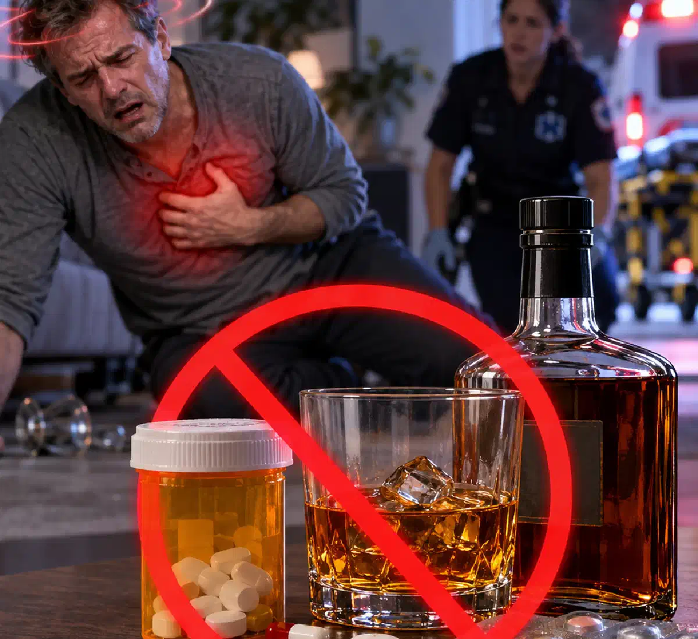

+38(068) 79 72 782
+38(068) 79 72 782Лікарські засоби, несумісні з алкоголем
Ризик тяжких ускладнень і летального наслідку


Безкоштовна консультація, працюємо цілодобово 24/7
Ризик тяжких ускладнень і летального наслідку

Дата написання: 18 вер. 2026 р.
Останнє оновлення: 18 вер. 2026 р.
Алкоголь здатний змінювати дію багатьох лікарських препаратів. В одних випадках він посилює сонливість і запаморочення, в інших — підвищує ризик падіння артеріального тиску, кровотечі, ураження печінки, порушення серцевого ритму або пригнічення дихання. Особливо небезпечним є поєднання спиртного з препаратами, що впливають на центральну нервову систему. Не кожна взаємодія алкоголю та лікарського засобу призводить до тяжкого отруєння, проте заздалегідь передбачити індивідуальну реакцію буває складно. Значення мають конкретний препарат, його доза, кількість алкоголю, вік людини, захворювання печінки, серця та нирок, а також одночасний прийом інших медикаментів.
Етанол впливає на роботу головного мозку, печінки, судин і серцево-судинної системи. Багато лікарських засобів діють на ті самі органи та фізіологічні процеси. При одночасному вживанні ефекти можуть підсумовуватися або ставати непередбачуваними. Наприклад, алкоголь здатний посилювати седативну дію ліків. Людина стає сонливою, гірше контролює рухи, повільніше реагує на те, що відбувається. При поєднанні з деякими препаратами, що пригнічують центральну нервову систему, зростає ризик порушення свідомості та дихання. В інших випадках алкоголь змінює метаболізм препарату в печінці або посилює його побічні ефекти. При значному погіршенні стану може знадобитися лікування інтоксикації під медичним наглядом.
Найбільшої обережності потребують препарати, які самі по собі здатні знижувати рівень свідомості або пригнічувати дихання. Особливо небезпечними можуть бути поєднання алкоголю з опіоїдними знеболювальними, бензодіазепіновими транквілізаторами, деякими снодійними та іншими сильними седативними засобами. Алкоголь також може несприятливо взаємодіяти з окремими антидепресантами, антипсихотичними засобами, препаратами від тиску, деякими антиаритмічними та протисудомними препаратами. Якщо людина вже прийняла потенційно небезпечну комбінацію і почувається погано, необхідний терміновий виклик нарколога або екстреної медичної служби — залежно від вираженості симптомів.
Наслідки залежать від механізму дії препарату. Найчастіше виникають виражена сонливість, порушення координації, запаморочення, нудота та зниження артеріального тиску. При небезпечних поєднаннях можливе пригнічення центральної нервової системи. Людина стає загальмованою, перестає нормально відповідати на запитання, засинає і важко прокидається. Найбільш тяжкі ускладнення пов’язані з порушенням дихання, втратою свідомості та тяжкими порушеннями серцевого ритму. У таких ситуаціях може знадобитися професійне зняття алкогольної інтоксикації та постійний медичний контроль.
Реакція організму може варіюватися від легкого запаморочення до тяжкого отруєння. Можливі виражена сонливість, слабкість, порушення координації, сплутаність свідомості, нудота, блювання, коливання тиску, тахікардія, порушення серцевого ритму, втрата свідомості, судоми та розлади дихання. Ризик особливо зростає, якщо людина одночасно приймає кілька препаратів або вживає спиртне на тлі хронічних захворювань. Якщо інтоксикація виникла після значної кількості алкоголю, лікар після огляду визначає, чи потрібна детоксикація від алкоголю або інтенсивніше лікування у стаціонарі.
Найнебезпечнішими є ситуації, за яких алкоголь посилює дію препаратів, що пригнічують центральну нервову систему. Якщо дихання стає рідким, поверхневим або нерегулярним, людина не прокидається при спробі її розбудити, з’являються судоми або втрата свідомості, існує безпосередня загроза життю. Небезпечним є також поєднання спиртного з препаратами, здатними впливати на серцевий ритм або артеріальний тиск. У таких ситуаціях звичайна наркологічна допомога вдома може бути недостатньою — пацієнту потрібна екстрена оцінка стану та, за необхідності, госпіталізація.
Одночасно алкоголь і лікарський препарат можуть впливати на одні й ті самі рецептори або фізіологічні процеси. Наприклад, препарат викликає сонливість, а алкоголь додатково пригнічує активність центральної нервової системи. У результаті звичайна терапевтична доза ліків може переноситися значно гірше. Крім того, етанол впливає на роботу печінки, де метаболізуються багато медикаментів. Це може змінювати концентрацію препарату або його метаболітів в організмі. Якщо після такого поєднання з’явилися виражені симптоми отруєння, самостійне очікування може бути небезпечним. Потрібна консультація нарколога або екстрена медична допомога.
Особливої уваги потребують препарати з вираженою седативною дією. До них належать деякі заспокійливі та снодійні препарати, опіоїдні знеболювальні та низка інших засобів, здатних пригнічувати активність центральної нервової системи. При поєднанні з алкоголем сонливість може стати значно вираженішою. У тяжких випадках людина перестає нормально реагувати на оточення, а дихання стає уповільненим або поверхневим. Такий стан не можна намагатися просто «проспати». Залежно від тяжкості може знадобитися лікування алкогольного отруєння під медичним наглядом.
Багато заспокійливих засобів знижують збудливість центральної нервової системи. Алкоголь здатний посилювати цей ефект. Людина може швидко стати загальмованою, втратити координацію, впасти або травмуватися. У тяжчих випадках можливе порушення свідомості. Особливо небезпечно самостійно збільшувати дозу заспокійливого, якщо після вживання алкоголю зберігається тривога або людина не може заснути. При вираженій інтоксикації може знадобитися зняття інтоксикації без обліку з подальшим спостереженням за станом пацієнта.
Поєднувати алкоголь зі снодійними препаратами без дозволу лікаря не рекомендується. Деякі снодійні та алкоголь чинять односпрямовану пригнічувальну дію на центральну нервову систему. Замість звичайного сну може розвинутися надмірна седація, порушення координації, сплутаність свідомості або небезпечне пригнічення дихання. Не можна використовувати снодійне як спосіб заснути після великої кількості алкоголю. Якщо проблема пов’язана не з одноразовим епізодом, а з тривалим вживанням спиртного, після медичної стабілізації може знадобитися лікування алкогольної залежності.
Різні антидепресанти та психотропні лікарські засоби взаємодіють з алкоголем по-різному. У частини препаратів спиртне посилює сонливість, запаморочення, зниження концентрації та порушення координації. В інших випадках можуть виникати додаткові ризики, пов’язані зі зміною артеріального тиску, серцевого ритму або психоемоційного стану. Алкоголь також здатний погіршувати перебіг тривожних і депресивних станів. Якщо одночасно має місце регулярне зловживання спиртним, після усунення гострих симптомів слід розглядати комплексне лікування алкоголізму, а не лише періодичне усунення інтоксикації.
Ризик залежить від виду знеболювального препарату. Особливо небезпечним є поєднання алкоголю з опіоїдними препаратами через можливість вираженої сонливості, втрати свідомості та пригнічення дихання. При поєднанні алкоголю з деякими протизапальними знеболювальними може зростати ризик подразнення слизової оболонки шлунка та шлунково-кишкової кровотечі. При вираженій змішаній інтоксикації пацієнту може знадобитися наркологічний стаціонар, особливо якщо стан неможливо безпечно контролювати вдома.
Алкоголь впливає на тонус судин, частоту серцевих скорочень та артеріальний тиск. Якщо одночасно приймається лікарський засіб із серцево-судинною дією, реакція може стати більш вираженою. Можливі слабкість, запаморочення, падіння тиску та порушення координації. Якщо після поєднання ліків зі спиртним з’явилися виражений біль у грудях, втрата свідомості, задишка або різка слабкість, потрібна екстрена допомога. При стабільному стані та необхідності оцінити наслідки вживання можливий виклик нарколога додому, однак формат допомоги визначає лікар.
Прийом гіпотензивних препаратів на тлі алкоголю може супроводжуватися більш вираженим зниженням артеріального тиску. Можливі запаморочення, слабкість, потемніння в очах і втрата рівноваги. Особливо небезпечним є різке падіння тиску у пацієнтів похилого віку та людей із захворюваннями серця. Не можна самостійно скасовувати постійно призначений препарат або приймати додаткову дозу, намагаючись скоригувати показники тиску після вживання спиртного. Якщо підвищення або зниження тиску виникло після тривалого вживання алкоголю, тактику виведення із запою вдома повинен визначати медичний фахівець після оцінки стану.
Поширене твердження, що абсолютно всі антибіотики категорично несумісні з будь-якою кількістю алкоголю, є надто узагальненим. Ризик залежить від конкретного препарату. Деякі антибактеріальні засоби справді мають прямі обмеження щодо вживання алкоголю через можливі несприятливі реакції. Навіть за відсутності специфічної взаємодії спиртне може посилювати нудоту, запаморочення, зневоднення та загальне нездужання. Якщо одночасно присутня алкогольна інтоксикація, необхідність прокапатися після алкоголю визначає лікар, а не сам пацієнт.
Перші прояви можуть бути неспецифічними. Виникають запаморочення, нудота, слабкість, сонливість і порушення координації. Більш насторожувальні ознаки — виражена загальмованість, сплутаність свідомості, багаторазове блювання, значне падіння артеріального тиску або порушення серцевого ритму. Особливо небезпечними є ситуації, коли людина перестає нормально реагувати на оточення, втрачає свідомість або в неї порушується дихання. При стабільному стані лікар може визначити показання до крапельниці від алкоголю вдома, однак при тяжкій змішаній інтоксикації домашня інфузія не замінює стаціонар.
До найбільш небезпечних ознак належать втрата свідомості, неможливість розбудити людину, виражена сплутаність свідомості, рідке або нерегулярне дихання, судоми, посиніння губ, біль у грудях, серйозні порушення серцевого ритму та багаторазове блювання на тлі загальмованості. При таких симптомах необхідна екстрена медична допомога. Не слід намагатися обмежитися терміновою крапельницею від токсинів, якщо у пацієнта порушені свідомість або дихання. У таких випадках пріоритетом є госпіталізація та контроль життєво важливих функцій.
Насамперед необхідно з’ясувати, який препарат було прийнято, у якій кількості та коли. Якщо упаковка препарату збереглася, її бажано залишити для медичних фахівців. Людину з вираженою сонливістю не можна залишати саму. Якщо вона непритомна, але дихає, необхідно контролювати дихання та зменшити ризик потрапляння блювотних мас у дихальні шляхи. Не слід давати додаткові ліки, алкоголь, каву або енергетики у спробі нейтралізувати дію препарату. Якщо стан залишається стабільним, можлива доступна наркологічна допомога після консультації фахівця. При тяжких симптомах необхідно негайно звертатися до екстреної медичної служби.
Звернення до служби екстреної медичної допомоги необхідне при втраті свідомості, судомах і порушенні дихання. Також небезпечними є біль у грудях, виражена сплутаність свідомості, різка зміна поведінки, багаторазове блювання на тлі загальмованості та неможливість нормально розбудити людину. Не слід чекати появи всіх симптомів одночасно. Якщо стан швидко погіршується, домашнє виведення із запою або звичайна інфузійна терапія не є відповідним рішенням.
Універсального домашнього способу нейтралізувати взаємодію алкоголю та ліків не існує. Кава, холодний душ, сон або велика кількість води не скасовують фармакологічної дії препарату. Тактика залежить від конкретної речовини, часу після її прийому та симптомів пацієнта. Якщо стан дозволяє залишатися вдома, лікар може провести огляд і за необхідності призначити крапельницю після алкоголю. При тяжкій інтоксикації необхідна госпіталізація.
Самостійне викликання блювання може бути небезпечним. Якщо алкоголь і лікарський препарат спричинили сонливість або загальмованість, людина може вдихнути блювотні маси в дихальні шляхи. Це створює ризик аспірації та тяжких ускладнень. Крім того, блювання не гарантує видалення препарату, який уже всмоктався. При підозрі на змішане отруєння краще отримати консультацію фахівця з інтоксикації, а при виражених симптомах — одразу звертатися по екстрену допомогу.
Єдиного інтервалу для всіх препаратів не існує. Один лікарський засіб виводиться відносно швидко, інший діє значно довше. Деякі препарати приймаються щодня та потребують відмови від алкоголю протягом усього курсу лікування. Значення мають функція печінки та нирок, вік, доза препарату та наявність інших лікарських засобів. Не можна використовувати універсальне правило на кшталт «почекати кілька годин». Безпечний інтервал визначається відповідно до інструкції конкретного препарату або рекомендації лікаря.
Ризик визначається одночасно кількома факторами. Значення мають конкретний препарат, його доза, кількість випитого алкоголю, час між прийомами та наявність інших лікарських засобів. Також важливі вік людини та стан печінки, нирок, серця і нервової системи. Якщо спиртне вживалося кілька днів поспіль, після оцінки протипоказань лікар може запропонувати зняття запою вдома або лікування у стаціонарі.
Для багатьох препаратів ступінь ризику справді залежить від кількості алкоголю, однак існують лікарські засоби, для яких навіть невеликий об’єм спиртного може бути небажаним. Особливо це важливо при прийомі препаратів із вираженою седативною дією або лікарських засобів, які мають специфічні обмеження щодо взаємодії з етанолом. Не можна орієнтуватися лише на суб’єктивне відчуття сп’яніння. Людина може не почуватися сильно п’яною, але взаємодія ліків з алкоголем уже впливає на реакцію, координацію або дихання. При регулярному вживанні спиртного слід заздалегідь обговорити з лікарем не лише сумісність препаратів, а й необхідність лікування залежності від алкоголю.
Особливо обережними повинні бути люди із захворюваннями печінки, оскільки цей орган бере участь у метаболізмі алкоголю та багатьох лікарських препаратів. Додатковий ризик існує при захворюваннях серця, порушеннях ритму, нестабільному артеріальному тиску та тяжких захворюваннях нирок. Похилий вік також може підвищувати чутливість до седативної дії медикаментів та алкоголю. Якщо на тлі хронічних захворювань виникає тривалий запій, тяжка абстиненція та виражена інтоксикація є приводом для медичної оцінки та нерідко стаціонарного лікування.
Найнадійніший спосіб уникнути лікарсько-алкогольної взаємодії — заздалегідь уточнювати сумісність кожного призначеного препарату зі спиртним. Не слід орієнтуватися лише на досвід знайомих або попередні випадки, коли поєднання не спричинило помітних наслідків. Перед початком лікування необхідно повідомити лікаря про регулярне вживання алкоголю та інших препаратів. Це особливо важливо, якщо призначаються снодійні, заспокійливі, психотропні або сильні знеболювальні засоби. Якщо людина регулярно вживає алкоголь і має труднощі із самостійною відмовою від нього, може знадобитися анонімна наркологічна допомога, лікування залежності, психотерапія та подальша профілактика зриву. Після тривалого вживання спочатку проводиться медична оцінка, а за необхідності вивести із запою пацієнта допомагають з урахуванням його стану, тривалості вживання та супутніх захворювань.

Статтю перевірено експертом
Богоденко Костянтин
Лікар-анестезіолог, ординатор
Можливо цікава стаття:
Чи можна приймати таблетки від тиску після алкоголю

Так, ми суворо дотримуємося повної конфіденційності на всіх етапах лікування. Інформація про пацієнта, діагноз та проходження терапії не передається третім особам. Звернення до нас не тягне за собою постановку на облік. Ви можете бути впевнені у безпеці та анонімності.
Програма лікування розробляється індивідуально після консультації з фахівцем. Враховуються вид залежності, її тривалість, фізичний та психологічний стан пацієнта. Такий підхід дозволяє підвищити ефективність терапії та знизити ризик зриву. Ми не використовуємо шаблонні рішення.
Так, ми супроводжуємо пацієнтів і після основного курсу лікування. Проводяться консультації, рекомендації щодо адаптації та профілактики рецидивів. За потреби можлива подальша психологічна підтримка. Це допомагає зберегти результат та повернутися до повноцінного життя.
Номер телефону:
+380 (68) 797 27 82
+380 (50) 021 69 57
Адресу наркологічного центра вашого міста уточнюйте за
телефоном
Працюємо: Київ, Одеса, Львів, Харків, Дніпро, Запоріжжя,
Черкасах, Чугуєві, Чорноморську, Кам'янському
Telegram: t.me/umbrellaplus
Графік работы: Цілодобово